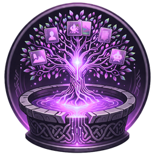
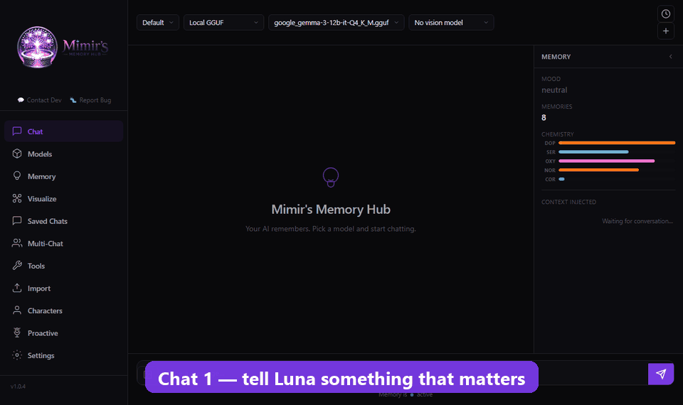

Mimir's Memory HubA free AI companion and character platform that runs on your own PC. Your characters build a persistent, human-like memory of you: memories fade, strengthen, carry emotion and get consolidated while they "sleep".
Portable Windows zip: unzip, double-click run.bat, done. No Python or install needed.

Real, unscripted output from Gemma 3 12B running locally. Chat 2 is a fresh conversation, so Luna only knows about Rex from her memory. (The memory's date was moved back 3 days to stand in for time passing.)
Things you said weeks ago come back when they're relevant, not just what fits in the context window.
Important and emotional moments stick; small talk fades on a real forgetting curve.
Simulated dopamine, serotonin, oxytocin, norepinephrine and cortisol shape how memories are formed and recalled.
Tell it you moved city and the old fact is superseded, not left competing with the new one.
A sleep cycle merges, prunes and links memories, and can produce dream-like insights.
Browse every memory in a live graph, a 3D landscape, mood and chemistry timelines, and more.
Each character has its own separate memory. Put several in one conversation with you.
Ollama, local GGUF via llama.cpp, LM Studio, Transformers, OpenAI, Anthropic, Google, OpenRouter, vLLM or any OpenAI-compatible API.
Everything runs and is stored on your machine unless you choose a cloud API. Imports SillyTavern character cards.
| Typical chat app | Vector-store memory (RAG) | Mimir's Memory Hub | |
|---|---|---|---|
| Remembers across sessions | ❌ limited to the context window | ✅ | ✅ |
| Emotional moments recalled more readily | ❌ | ❌ similarity only | ✅ |
| Natural forgetting curve | ❌ | ❌ keeps everything equally | ✅ |
| Mood shapes what comes to mind | ❌ | ❌ | ✅ |
| Updates beliefs when facts change | ❌ | ⚠️ old and new both match | ✅ |
| Consolidation, sleep and dreams | ❌ | ❌ | ✅ |
| Browse the memory graph | ❌ | ❌ | ✅ |
| Runs fully offline | varies | varies | ✅ |
Benchmarks: 93.9% Recall@5 on LongMemEval; 4.4× the no-memory baseline on Mem2ActBench tool accuracy. Full results, including where it's weaker.
run.bat. Your browser opens automatically..gguf file, or add an API key.Yes. No paid tiers, no premium features, no account. It's free for personal and non-commercial use.
Not unless you choose a cloud model (OpenAI, Anthropic, Google, OpenRouter). With a local model, conversations and memories never leave your machine.
The hub itself is light. What you need depends on the model: small local models run on a modest GPU or even CPU, and with a cloud API any PC works.
A context window is short-term memory: it fills up and the oldest things fall out. Mimir keeps a long-term store and brings back what's relevant, weighting it by importance, emotion, mood and how recently and often it's been recalled, the way people remember.
Yes. Import character cards (PNG or JSON), single files or whole folders.